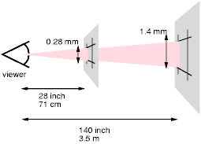

Содержание
В этом разделе описывается грамматика (и правила вперёд-совместимого разбора), общие для любой версии CSS (включая CSS2). Будущие версии CSS будут придерживаться этого ядра синтаксиса, хотя и могут ввести дополнительные синтаксические ограничения.
Эти описания являются нормативными. Они также дополняются нормативными грамматическими правилами в Приложении D.
Все уровни CSS - уровень 1, уровень 2 и любые будущие уровни - используют одно ядро синтаксиса. Это позволяет пользовательским агентам (ПА) разбирать (хотя и не полностью понимать) таблицы стилей, написанные в уровнях CSS, ещё не существовавших в момент создания ПА. Дизайнеры могут использовать это свойство для создания таблиц стилей, работающих со старыми ПА, применяя также возможности позднейших уровней CSS.
На лексическом уровне таблицы стилей CSS состоят из последовательности лексем (грамматических единиц). Список лексем CSS2 приведён ниже. Определения используют общепринятые выражения в стиле Lex. Восьмеричные коды относятся к ISO 10646 ([ISO10646]). Как и в Lex, в случае нескольких одновременных совпадений, самое длинное совпадение определяет лексему.
|
Лексема |
Определение |
|---|---|
| IDENT | {ident}
|
| ATKEYWORD | @{ident}
|
| STRING | {string}
|
| HASH | #{name}
|
| NUMBER | {num}
|
| PERCENTAGE | {num}%
|
| DIMENSION | {num}{ident}
|
| URI | url\({w}{string}{w}\)
|
| UNICODE-RANGE | U\+[0-9A-F?]{1,6}(-[0-9A-F]{1,6})?
|
| CDO | <!--
|
| CDC | -->
|
| ; | ;
|
| { | \{
|
| } | \}
|
| ( | \(
|
| ) | \)
|
| [ | \[
|
| ] | \]
|
| S | [ \t\r\n\f]+
|
| COMMENT | \/\*[^*]*\*+([^/][^*]*\*+)*\/
|
| FUNCTION | {ident}\(
|
| INCLUDES | ~=
|
| DASHMATCH | |=
|
| DELIM | любой другой символ, не совпавший с вышеприведёнными правилами |
Вышеприведённые макросы в фигурных скобках ({}) определены так:
| Макрос | Определение |
|---|---|
| ident | {nmstart}{nmchar}*
|
| name | {nmchar}+
|
| nmstart | [a-zA-Z]|{nonascii}|{escape}
|
| nonascii | [^\0-\177]
|
| unicode | \\[0-9a-f]{1,6}[ \n\r\t\f]?
|
| escape | {unicode}|\\[ -~\200-\4177777]
|
| nmchar | [a-z0-9-]|{nonascii}|{escape}
|
| num | [0-9]+|[0-9]*\.[0-9]+
|
| string | {string1}|{string2}
|
| string1 | \"([\t !#$%&(-~]|\\{nl}|\'|{nonascii}|{escape})*\"
|
| string2 | \'([\t !#$%&(-~]|\\{nl}|\"|{nonascii}|{escape})*\'
|
| nl | \n|\r\n|\r|\f
|
| w | [ \t\r\n\f]*
|
Ниже дан синтаксис ядра CSS. В последующих разделах описывается, как этот синтаксис использовать. Приложение D описывает более ограниченный набор грамматических правил исключительно для уровня 2 языка CSS.
stylesheet : [ CDO | CDC | S | statement ]*;
statement : ruleset | at-rule;
at-rule : ATKEYWORD S* any* [ block | ';' S* ];
block : '{' S* [ any | block | ATKEYWORD S* | ';' ]* '}' S*;
ruleset : selector? '{' S* declaration? [ ';' S* declaration? ]* '}' S*;
selector : any+;
declaration : property ':' S* value;
property : IDENT S*;
value : [ any | block | ATKEYWORD S* ]+;
any : [ IDENT | NUMBER | PERCENTAGE | DIMENSION | STRING
| DELIM | URI | HASH | UNICODE-RANGE | INCLUDES
| FUNCTION | DASHMATCH | '(' any* ')' | '[' any* ']' ] S*;
Лексемы КОММЕНТАРИЕВ в грамматике отсутствуют (для сохранения читабельности), но некоторое количество этих лексем может появляться где-либо среди других лексем.
Лексема S в вышеприведённой грамматике стоит вместо пробела. Только символы "space" (Unicode code 32), "tab" (9), "line feed" (10), "carriage return" (13) и "form feed" (12) могут служить пробелами. Другие "пробелоподобные" символы, такие как "em-space" (8195) и "ideographic space" (12288), никогда не могут быть пробелами.
Ключевые слова имеют форму идентификаторов. Ключевые слова обязаны не размещаться между кавычками ("..." или '...'). Таким образом,
red
это ключевое слово, а
"red"- нет (это строка). Другие неверные примеры:
width: "auto"; border: "none"; font-family: "serif"; background: "red";
Следующие правила всегда соблюдаются:
Заметьте, что Unicode это покодовый эквивалент ISO 10646 (см. [UNICODE] и [ISO10646]).
1. В строке обратный слэш, после которого идёт новая строка, игнорируется (т.е. считается, что строка не содержит ни обратных слэшей, ни переводов строки).
2. Отменяет значение специальных символов CSS. Любой символ (исключая 16-ричные числа) может войти в escape-последовательность с помощью обратного слэша для отмены своего специального значения. Например, "\"" это строка. состоящая из одной двойной кавычки. Препроцессоры таблиц стилей обязаны не удалять эти слэши из таблиц стилей до тех пор, пока они не изменят значения таблицы стилей.
3. Escape-последовательности с обратным слэшем позволяют авторам обращаться к символам, которые не могут быть напрямую помещены в документ. В таких случаях используется обратный слэш, после которого идут не более шести 16-ричных цифр (0..9A..F), что соответствует символам ISO 10646 ([ISO10646]) с этим числом. Если после 16-ричного числа идёт цифра или буква, то конец числа должен быть очищен. Есть два способа сделать это:
Фактически эти два метода можно комбинировать. Только один символ пробела игнорируется после 16-ричной escape-последовательности. Заметьте, что это означает, что "реальный" пробел после escape-последовательности обязан или сам быть выражен с использованием escape-последовательности, или удвоен.
Таблица стилей любой версии CSS состоит из списка операторов (см. грамматику выше). Есть два вида операторов: at-правила и наборы правил. Вокруг операторов могут быть пробелы.
В данной спецификации выражения "непосредственно перед" или "сразу после" означают отсутствие пробелов или комментариев.
At-правила начинаются at-ключевым словом, символом '@', сразу после которого следует идентификатор (например, '@import', '@page').
At-правило состоит из вышеназванного и последующей точки с запятой (;) или блока, в зависимости от того, что идёт первым. ПА CSS, обнаруживающий нераспознаваемое at-правило, обязан игнорировать всё это правило и продолжить разбор после него.
В CSS2 ПА обязан игнорировать любое правило '@import', которое появляется внутри блока или предшествует всем наборам правил.
Предположим, например, что разборщик CSS2 обрабатывает такую таблицу стилей:
@import "subs.css";
H1 { color: blue }
@import "list.css";
Второе '@import', в соответствии с CSS2, недопустимо. Разборщик CSS2 игнорирует всё at-правило, сокращая таблицу стилей до:
@import "subs.css";
H1 { color: blue }
Здесь второе правило '@import' - неверное, поскольку появляется внутри блока '@media'.
@import "subs.css";
@media print {
@import "print-main.css";
BODY { font-size: 10pt }
}
H1 {color: blue }
Блок начинается с левой фигурной скобки ({) и заканчивается парной правой скобкой (}). Между ними могут находиться любые символы, кроме скобок (( )), квадратных скобок ([ ]) и фигурных скобок ({ }), которые обязаны всегда использоваться в паре и могут вкладываться. Одиночные (') и двойные (") кавычки также обязаны использоваться парами, а символы между ними разбираются как строка\string. См. выше определение строки в Лексическом разборе.
Это пример блока. Обратите внимание, что правая скобка между двойными кавычками не образует пары с открывающей скобкой блока, а вторая одиночная кавычка - это escape-символ, не образующий пары с первой одиночной кавычкой:
{ causta: "}" + ({7} * '\'') }
Заметьте, что это неверное правило CSS2, образующее, тем не менее, блок, как указано выше.
Набор правил (называемый также "правило") состоит из селектора с последующим блоком объявлений.
Блок объявлений (называемый также в последующем тексте {}-блоком) начинается с левой фигурной скобки ({) и заканчивается парной правой скобкой (}). Между ними может находиться список из 0 или более разделённых точкой с запятой (;) объявлений.
Селектор (см. также раздел Селекторы) состоит из чего-либо, предшествующего первой скобке (но не включая) ({). Селектор всегда идёт вместе с {}-блоком. Если ПА не может разобрать селектор (т.е. если он неверен в CSS2), он обязан также игнорировать и {}-блок.
В CSS2 запятая (,) имеет специальное значение в селекторах. Однако, поскольку не известно, примет ли запятая иные значения в последующих версиях CSS, весь оператор должен быть проигнорирован, если где-либо в селекторе имеется ошибка, даже если остальная часть селектора выглядит как соответствующая CSS2.
Например, поскольку "&" это неверная лексема в селекторе CSS2, ПА CSS2 обязан игнорировать всю вторую строку и не устанавливать красный цвет в H3:
H1, H2 {color: green }
H3, H4 & H5 {color: red }
H6 {color: black }
Это более сложный пример. Первые две пары фигурных скобок находятся внутри строки и не обозначают конец селектора. Это - верный оператор CSS2.
P[example="public class foo\
{\
private int x;\
\
foo(int x) {\
this.x = x;\
}\
\
}"] { color: red }
Объявление может быть пустым или состоять из свойства с последующими двоеточием (:) и значением. Вокруг каждого из них могут быть пробелы.
В зависимости от способа работы селектора, несколько объявлений для одного селектора могут быть упорядочены точкой с запятой (;), разделяющей группы.
Таким образом, следующие правила:
H1 { font-weight: bold }
H1 { font-size: 12pt }
H1 { line-height: 14pt }
H1 { font-family: Helvetica }
H1 { font-variant: normal }
H1 { font-style: normal }
эквивалентны:
H1 {
font-weight: bold;
font-size: 12pt;
line-height: 14pt;
font-family: Helvetica;
font-variant: normal;
font-style: normal
}
Свойства это идентификаторы. Между ними могут находиться любые символы, кроме скобок (( )), квадратных скобок ([ ]) и фигурных скобок ({ }), которые обязаны всегда использоваться в паре, а точка с запятой вне строки обязана вводиться с использованием escape-последовательности. Угловые, квадратные и круглые скобки могут вкладываться. Внутри кавычек символы разбираются как строка.
Синтаксис значений специфицируется отдельно для каждого свойства, но, в любом случае, значения выводятся из идентификаторов, строк, чисел, размеров, процентов, URI, цветов, углов, времени и частот.
ПА обязан игнорировать объявление с неверным названием свойства или неверным значением. Каждое свойство CSS2 имеет свой собственный синтаксис и семантические ограничения для принимаемых значений.
Предположим, что разборщик CSS2 обрабатывает такую таблицу стилей:
H1 { color: red; font-style: 12pt } /* Неверное значение: 12pt */
P { color: blue; font-vendor: any; /* Неверное свойство: font-vendor */
font-variant: small-caps }
EM EM { font-style: normal }
Второе объявление в первой строке имеет неверное значение '12pt'. Второе объявление второй строки содержит неопределённое свойство 'font-vendor'. Разборщик CSS2 будет игнорировать эти объявления, уменьшая таблицу до:
H1 { color: red; }
P { color: blue; font-variant: small-caps }
EM EM { font-style: normal }
Комментарии начинаются символом "/*" и заканчиваются символом "*/". Они могут появляться в любом месте между лексемами, и их содержимое не влияет на представление документа. Комментарии не могут вкладываться.
CSS допускает также SGML-ограничители комментариев ("<!--" и "-->") в определённых местах, но это не комментарии CSS. Они разрешены для ввода правил стиля в документе-источнике HTML (в элементе STYLE), чтобы спрятать эти правила от до-HTML 3.2 ПАгентов. См. спецификацию HTML 4.0 ([HTML40]).
В некоторых случаях ПА обязан игнорировать часть неверной таблицы стилей. В этой спецификации игнорирует означает, что ПА разбирает неверную часть (чтобы определить её начало и конец), но действует так, как будто её нет.
Для гарантий того, что новые свойства и новые значения для существующих свойств смогут быть добавлены в будущем, от ПА требуется соблюдение следующих правил при обработке следующих сценариев:
H1 { color: red; rotation: 70minutes }
ПА будет рассматривать это, как если бы в таблице было:
H1 { color: red }
IMG { float: left } /* корректно в CSS2 */
IMG { float: left here } /* "here" это неверное значение для 'float' */
IMG { background: "red" } /* ключевые слова CSS2 не могут вводиться в кавычках */
IMG { border-width: 3 } /* для размеров должны быть указаны единицы измерения */
Разборщик CSS2 примет первое правило и
проигнорирует
остальные, как если бы таблица была такой:
IMG { float: left }
IMG { }
IMG { }
IMG { }
ПА, соответствующий будущим спецификациям CSS, может учитывать также одно или более из следующих правил.
@three-dee {
@background-lighting {
azimuth: 30deg;
elevation: 190deg;
}
H1 { color: red }
}
H1 { color: blue }
Правило от- '@three-dee' не входит в CSS2. Следовательно, всё at-правило (до третьей правой фигурной скобки включительно) игнорируется. ПА CSS2 игнорирует его, уменьшая таблицу до:
H1 { color: blue }
Значения некоторых типов могут принимать целые (обозначенные <integer>) или реальные числа (обозначенные <number>). Реальные и целые числа специфицируются только в десятеричной нотации. <integer> состоит из одной или более цифр от "0" до "9". <number> может быть <integer> или ноль или более цифр с точкой (.), после которой идут одна или более цифр. И целые, и реальные числа могут иметь впереди "-" или "+" для указания знака числа.
Заметьте, что многие свойства, допускающие целые и реальные числа в качестве значения, на практике ограничивают значение некоторым диапазоном, часто неотрицательным значением.
Размеры имеют отношение к горизонтальным и вертикальным измерениям.
Формат значения размера (обозначаемого в этой спецификации <length>) - это необязательный символ знака ('+' или '-', с '+' по умолчанию), после которого сразу идёт <number> (с или без десятичной точки), после которого сразу идёт идентификатор единиц измерения (например, px, deg и т.п.). После размера '0' единицы измерения не обязательны.
Некоторые свойства допускают негативные значения размеров, но это может усложнять модель форматирования и могут иметься ограничения, обусловленные конкретной реализацией. Если негативное значение размера не поддерживается, оно должно быть конвертировано до ближайшего поддерживаемого значения.
Есть два типа единиц измерения: относительные и абсолютные. Относительные размеры специфицируют значение размера относительно какого-либо исходного свойства размера. Таблицы стилей, использующие относительные единицы измерения, легче масштабируются при переносе на различные носители (например, с дисплея компьютера на лазерный принтер).
Относительными единицами измерения являются:
H1 { margin: 0.5em } /* em */
H1 { margin: 1ex } /* ex */
P { font-size: 12px } /* px */
Единицы измерения 'em' эквивалентны вычисленному значению свойства 'font-size' того элемента, в котором оно используется. Исключением является тот случай, когда 'em' появляется в самом значении свойства 'font-size', тогда оно относится к размеру шрифта родительского элемента. Может использоваться для вертикального или горизонтального измерения. (Эта единица измерения иногда называется quad-width/квад-ширина в типографском тексте.)
Единицы 'ex' определяются 'x-height' шрифта. x-height называется так, потому что она часто равна высоте "x" нижнего регистра. Однако 'ex' определены даже для тех шрифтов, которые не содержат "x".
Правило:
H1 { line-height: 1.2em }
означает, что высота строки элементов H1 будет на 20% больше, чем размер шрифта элементов H1. С другой стороны:
H1 { font-size: 1.2em }
означает, что размер шрифта элементов H1 будет на 20% больше, чем размер шрифта, наследуемый из элементов H1.
Если они специфицированы для корня дерева документа (например, "HTML" в HTML), 'em' и 'ex' относятся к начальному значению свойства.
Пикселы относительны к разрешению устройства просмотра, т.е. чаще всего - дисплея компьютера. Если плотность пикселов выводного устройства сильно отличается от плотности типичного компьютерного дисплея, ПА должен перемасштабировать пикселные значения. Рекомендуется, чтобы пиксел в качестве точки отсчёта был визуальным углом одного пиксела на устройстве с плотностью пикселов 90dpi на расстоянии вытянутой руки от читателя. При нормальной длине руки 28 дюймов визуальный угол будет примерно 0.0227 градусов.
При чтении с расстояния вытянутой руки 1px соответствует примерно 0.28 мм (1/90 дюйма). При печати на лазерном принтере, рассчитанном на чтение с несколько меньшего расстояния, чем вытянутая рука, (55 см, 21 дюймов), 1px составляет около 0.21 мм. На принтере с разрешением 300 точек на дюйм (dpi) это можно округлить до 3 точек (0.25 мм); на принтере с 600 dpi это можно округлить до 5 точек.
Два нижеследующих изображения иллюстрируют эффект при просмотре размера пиксела с расстояния и эффект разрешения устройства. На первом рисунке расстояние чтения 71 см (28 дюймов) даёт пиксел 0.28 мм, а с расстояния 3.5 м (12 футов) требуется пиксел 1.4 мм.
 [D]
На втором рисунке область 1px на 1px закрывается одной точкой устройства с низким разрешением (экран компьютера), и та же самая область покрывается 16-ю точками на устройстве с высоким разрешением (как лазерный принтер 400 dpi).
Дочерние элементы не наследуют относительные значения, специфицированные для из родителя; они (обычно) наследуют вычисленные значения.
В следующих правилах вычисленное значение 'text-indent' элементов H1 будет 36pt, а не 45pt, если H1 является дочерним относительно элемента BODY:
BODY {
font-size: 12pt;
text-indent: 3em; /* т.е. 36pt */
}
H1 { font-size: 15pt }
Абсолютные
единицы измерения используются
только тогда, когда известны физические
свойства выводного устройства.
Абсолютными значениями являются:
H1 { margin: 0.5in } /* дюймы */
H2 { line-height: 3cm } /* сантиметры */
H3 { word-spacing: 4mm } /* миллиметры */
H4 { font-size: 12pt } /* пункты */
H4 { font-size: 1pc } /* пики */
В тех случаях, когда специфицированные размеры не могут поддерживаться, ПА обязаны давать значение, приближённое к реальному.
Формат процентного значения (обозначаемого в этой спецификации <percentage>) - это необязательный знак ('+' или '-', с '+' по умолчанию), сразу за которым следует <number>, за которым сразу следует '%'.
Процентные значения всегда относительны к другому значению, например, размеру. Каждое свойство, допускающее процентные значения, определяет также значение, на которое ссылается процентное. Значение может быть взято из другого свойства того же элемента, свойства элемента-предка или значения контекста форматирования (например, ширины содержащего блока). Если процентное значение установлено для свойства корневого элемента и проценты определены как относительные к наследуемому значению какого-либо свойства, то результирующее значение - это начальное значение этого свойства, взятое кратным количеству процентов.
Поскольку дочерние элементы (обычно) наследуют вычисленные значения своих родителей, в следующем примере дочерние от P элементы унаследуют значение в 12pt для 'line-height', а не процентное значение (120%):
P { font-size: 10pt }
P { line-height: 120% } /* 120% от 'font-size' */
URL (Uniform Resource Locator, см. [RFC1738] и [RFC1808]), предоставляет адрес ресурса Web. Ожидается появление нового способа идентификации ресурсов, называемого URN (Uniform Resource Name). Вместе они называются URI (Uniform Resource Identifiers, см. [URI]). В этой спецификации используется термин URI.
Значения URI в этой спецификации обозначаются <uri>. Функциональное обозначение URI в значениях свойств - "url()", как здесь:
BODY { background: url("http://www.bg.com/pinkish.gif") }
Формат значения URI таков: 'url(' с последующим необязательным пробелом, с последующей необязательной одинарной кавычкой (') или двойной кавычкой ("), с последующим собственно URI, с последующей необязательной одинарной кавычкой (') или двойной кавычкой ("), с последующим необязательным пробелом с последующей ')'. Знаки кавычек должны быть одинаковыми (двойными или одинарными).
Пример без кавычек:
LI { list-style: url(http://www.redballs.com/redball.png) disc }
Скобки, запятые, пробельные символы, одинарные (') и двойные (") кавычки в URI обязаны вводиться с помощью escape-последовательностей с обратным слэшем: '\(', '\)', '\,'.
В зависимости от типа URI, может иметься возможность также записывать вышеуказанные символы как URI-escape-последовательности (где "(" = %28, ")" = %29 и т.д.), как описано в [URI].
Для того, чтобы создать модульные таблицы стилей, не зависящие от абсолютного размещения ресурса, авторы могут использовать относительные URI. Относительные URI (как определено в [RFC1808]) расширяются до полного URI с использованием базового URI. RFC 1808, раздел 3 определяет нормативный алгоритм этого процесса. В таблицах стилей CSS базовый URI это URI таблицы стилей, а не документа-источника.
Предположим, имеется такое правило:
BODY { background: url("yellow") }
размещённое в таблице стилей с URI:
http://www.myorg.org/style/basic.css
Фон элемента BODY в документе-источнике будет заполнен каким-нибудь изображением, обозначенный ресурсом URI:
http://www.myorg.org/style/yellow
ПА могут по-разному обрабатывать URI, обозначающие несуществующий или необрабатываемый ресурс
Счётчики обозначаются идентификаторами (см. свойства 'counter-increment' и 'counter-reset'). Чтобы обратиться к значению счётчика, используется обозначение 'counter(<identifier>)' или 'counter(<identifier>, <list-style-type>)'. Стиль по умолчанию - 'decimal'.
Чтобы обратиться к последовательности вложенных счётчиков с одним именем, обозначение будет: 'counters(<identifier>, <string>)' или 'counters(<identifier>, <string>, <list-style-type>)'. См. "Вложенные счётчики и область видимости" в главе о генерируемом содержимом.
В CSS2 к значениям счётчиков можно обратиться только из свойства 'content'. Заметьте, что 'none', это возможный <list-style-type>: 'counter(x, none)' рассматривается как пустая строка.
Вот таблица стилей, нумерующая параграфы (P) для каждой главы (H1). Параграфы нумеруются римскими цифрами с последующими точкой и пробелом:
P {counter-increment: par-num}
H1 {counter-reset: par-num}
P:before {content: counter(par-num, upper-roman) ". "}
Счётчики вне области видимости какого-либо 'counter-reset', считаются сброшенными в 0 в 'counter-reset' корневого элемента.
Список названий цветов: aqua, black, blue, fuchsia, gray, green, lime, maroon, navy, olive, purple, red, silver, teal, white и yellow. Эти 16 цветов определены в HTML 4.0 ([HTML40]). Пользователь может дополнительно специфицировать ключевые слова, соответствующие цветам, используемым определёнными объектами в среде пользователя. Дополнительную информацию см. в системных цветах.
BODY {color: black; background: white }
H1 { color: maroon }
H2 { color: olive }
Модель цветов RGB используется в числовых спецификациях цвета. Во всех данных примерах специфицируется один и тот же цвет:
EM { color: #f00 } /* #rgb */
EM { color: #ff0000 } /* #rrggbb */
EM { color: rgb(255,0,0) } /* диапазон целых чисел 0 - 255 */
EM { color: rgb(100%, 0%, 0%) } /* диапазон чисел с плавающей точкой 0.0% - 100.0% */
Формат значения RGB в 16-ричной записи - '#' за которым сразу идут три или шесть 16-ричных символов. Трёхсимвольная запись RGB (#rgb) конвертируется в шестисимвольную форму (#rrggbb) путём дублирования цифр, но не дополнением нулями. Например, #fb0 расширяется до #ffbb00. Это гарантирует, что белый (#ffffff) можно специфицировать сокращённой записью (#fff) и удалить зависимость от глубины цвета на дисплее.
Формат значения RGB в функциональной записи - 'rgb(' за которым идёт список разделённых запятыми трёх числовых значений (или трёх целых, или трёх процентных) с последующей ')'. Целое значение 255 соответствует 100% и F или FF в 16-ричной записи: rgb(255,255,255) = rgb(100%,100%,100%) = #FFF. Пробельные символы допускаются вокруг числовых значений.
Все цвета RGB специфицированы в цветовом пространстве sRGB (см. [SRGB]). ПА могут различаться в том, насколько точно они представляют эти цвета, но использование sRGB предоставляет недвусмысленное и объективно измеряемое определение того, каким должен быть цвет, соответствующий международным стандартам (см. [COLORIMETRY]).
Соответствующие ПА могут ограничивать свои возможности вывода цвета для выполнения коррекции гаммы цветов. sRGB специфицирует гамму дисплея в 2.2 от специфицированных условий просмотра. ПА должны уточнить цвет, заданный в CSS, так чтобы в сочетании с 'натуральной' гаммой дисплея выводного устройства воспроизводилась эффективная гамма дисплея в 2.2. См. дополнительные детали в разделе коррекция гаммы. Обратите внимание, что воздействие производится только на цвета, специфицированные в CSS; например, от изображений ожидается сопровождающая их собственная цветовая информация.
Значения вне гаммы устройства должны усекаться: значения red, green и blue обязаны измениться, чтобы войти в рамки диапазона, поддерживаемого устройством. Для типичного CRT-монитора, чья гамма устройства - та же самая, что и sRGB, следующие три правила эквивалентны:
EM { color: rgb(255,0,0) } /* диапазон целых 0 - 255 */
EM { color: rgb(300,0,0) } /* усекается до rgb(255,0,0) */
EM { color: rgb(255,-10,0) } /* усекается до rgb(255,0,0) */
EM { color: rgb(110%, 0%, 0%) } /* усекается до rgb(100%,0%,0%) */
Другие устройства, такие как принтеры, имеют гаммы, отличные от sRGB; некоторые цвета вне диапазона 0..255 sRGB будут презентабельными (в пределах гаммы устройства), в то время как другие цвета в пределах диапазона 0..255 sRGB будут вне гаммы устройства и будут, таким образом, усечены.
Примечание. Хотя цвета могут добавить значительное количество информации в документы и сделать их более читабельными, необходимо учитывать, что определённые сочетания цветов могут вызвать проблемы у людей, страдающих нарушениями восприятия цвета. Если Вы используете фоновое изображение или устанавливаете цвет фона, подбирайте, пожалуйста, подходящий цвет переднего плана.
Угловые значения (обозначаемые в тексте <angle>) используются со звуковыми таблицами стилей.
Их формат - необязательный знак ('+' или '-', с '+' по умолчанию), сразу за которым следует <number>, за которым сразу следует идентификатор единиц измерения углов.
Единицами измерения углов являются:
Угловые значения могут быть негативными. Они должны быть нормализованы ПАгентом до диапазона 0-360deg. Например, -10deg и 350deg эквивалентны.
Для примера, правый угол - '90deg' или '100grad', или '1.570796326794897rad'.
Временные значения (обозначаемые в тексте <time>) используются со звуковыми таблицами стилей.
Их формат: <number>, сразу за которым идёт идентификатор единиц измерения времени.
Идентификаторами единиц измерения времени являются:
Значения времени не могут быть негативными.
Значения частот (обозначаемые в тексте <frequency>) используются со звуковыми каскадными таблицами стилей.
Их формат: <number>, сразу за которым идёт идентификатор единиц измерения частоты.
Идентификаторами единиц измерения частоты являются:
Значения частоты не могут быть негативными.
Например, 200Hz (или 200hz) - это басовый звук, а 6kHz (или 6khz) - средний регистр.
Строки могут записываться в двойных или одинарных кавычках. Двойные кавычки не могут появляться внутри двойных кавычек, если только они не вводятся с помощью escape-последовательности ( '\"' или '\22'). Аналогично для одинарной кавычки ("\'" или "\27").
"this is a 'string'" "this is a \"string\"" 'this is a "string"' 'this is a \'string\''
Строка не может непосредственно содержать переход на новую строку. Чтобы вставить переход на новую строку, используйте escape-последовательность "\A" (16-ричная A - это символ прогона строки в Unicode, но в CSS представляет общее обозначение для "новой строки"). См., например, свойство 'content'.
Можно разбивать строки на несколько строк, по эстетическим и другим соображениям, но в таком случае новая строка сама escape'ируется обратным слэшем (\). Например, следующие два селектора совершенно одинаковы:
A[TITLE="a not s\
o very long title"] {/*...*/}
A[TITLE="a not so very long title"] {/*...*/}
Таблица стилей CSS это последовательность символов из Universal Character Set/Универсального Набора Символов (см. [ISO10646]). Для передачи и хранения эти символы обязаны кодироваться в кодировке символов, поддерживающей набор символов, доступных в US-ASCII (например, ISO 8859-x, SHIFT JIS и т.д.). Чтобы хорошенько разобраться в наборах символов и кодировке, см. спецификацию HTML 4.0 ([HTML40], главу 5). См. также спецификацию XML 1.0 ([XML10], разделы 2.2 и 4.3.3, и Приложение F.
Если таблица стилей встроена в другой документ, например, элемент STYLE или атрибут "style" в HTML, таблица стилей разделяет использование кодировки символов с этим документов.
Если таблица стилей находится в отдельном файле, ПА обязаны учитывать следующий приоритет при определении кодировки символов документа (от высшего приоритета к низшему):
Не более одного правила @charset может появляться во внешней таблице стилей - оно обязано не появляться во внедрённой таблице стилей - и оно должно появляться в самом начале документа, до появления любых символов. После "@charset" авторы специфицируют имя кодировки символов. Имя обязано быть названием набора символов, как описано в регистре IANA (см. [IANA]. См. также в [CHARSETS] полный список наборов символов). Например:
@charset "ISO-8859-1";
В данной спецификации не определено, какие кодировки символов ПА обязан поддерживать.
Обратите внимание, что опора на конструкцию @charset теоретически создаёт проблему, поскольку отсутствует a priori информация о том, как она кодирована. На практике, однако, широко используемые кодировки в Internet базируются или на ASCII, UTF-16, UCS-4, или (редко) на EBCDIC. В общем, это означает, что значения начальных байтов документа дают ПАгенту возможность определить семейство кодировки, что даёт достаточно информации для декодирования правила @charset, которое, в свою очередь, определяет точную кодировку.
Таблице стилей может понадобиться обратиться к символам, которые невозможно представить в текущей кодировке символов. Эти символы обязаны быть записаны как escape'ированные ссылки на символы ISO 10646. Эти мнемоники служат для тех же целей, что и числовые ссылки в документах HTML или XML (см. [HTML40], главы 5 и 25).
Escape-механизм символов должен использоваться только тогда, когда необходимо вывести таким способом только несколько символов. Если большая часть документа требует этого, авторы должны кодировать документ в более подходящей кодировке (например, если документ содержит много греческих символов, автор может использовать "ISO-8859-7" или "UTF-8").
Процессоры-посредники, использующие другие кодировки символов, могут транслировать эти escape-последовательности в последовательности байтов кодировки. Процессоры-посредники не обязаны, с другой стороны, изменять escape-последовательности, отменяющие специальные значения символов ASCII.
Соответствующие ПА обязаны корректно отображать в Unicode все символы любой кодировки, которые они могут распознать (или они обязаны вести себя так, как будто они это делают).
Например, документ, передаваемый как ISO-8859-1 (Latin-1), не может содержать напрямую греческую букву: "κουρος" (по-гречески: "kouros"), которая должна быть записана как "\3BA\3BF\3C5\3C1\3BF\3C2".
Примечание. В HTML 4.0 числовые мнемоники интерпретируются в значениях атрибута "style", но не в содержимом элемента STYLE. Из-за этой асимметрии мы рекомендуем, чтобы авторы использовали escape-механизм CSS вместо числовых мнемоник и для атрибута "style", и для элемента STYLE. Например, мы рекомендуем:
<SPAN style="voice-family: D\FC rst">...</SPAN>
вместо:
<SPAN style="voice-family: Dürst">...</SPAN>